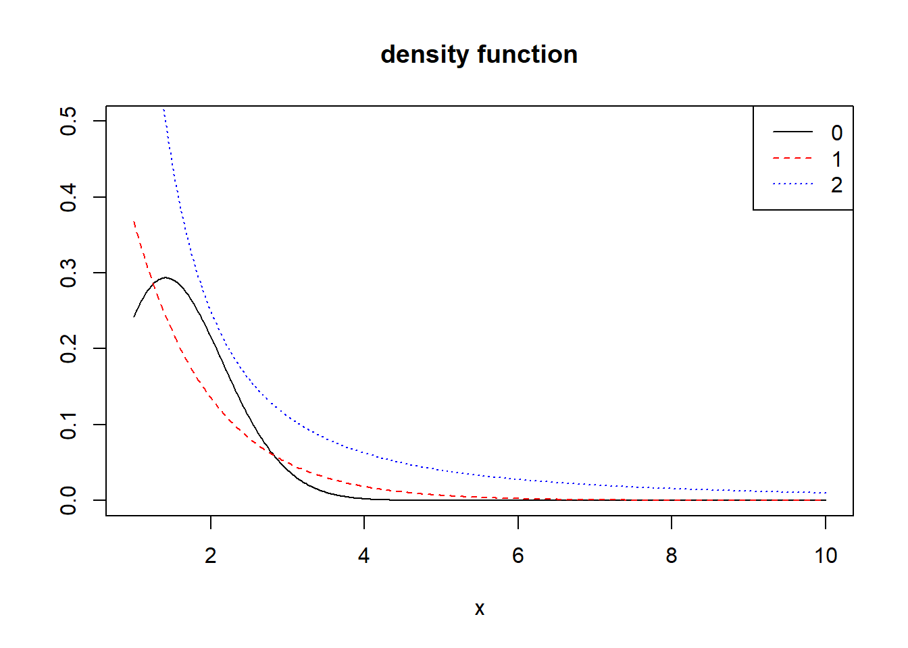

3 第3次作业解答
3.1 Question
Exercises 5.4, 5.9, 5.13, and 5.14
3.2 Answer
3.2.1 5.4
Write a function to compute a Monte Carlo estimate of the Beta(3, 3) cdf, and use the function to estimate F(x) for x = 0.1, 0.2, . . ., 0.9. Compare the estimates with the values returned by the pbeta function in R.
Solution: \(Beta(3,3)=\int_0^1 t^2(1-t)^2dt\)
MCBeta = function(x,n=10000){
t=runif(n, min = 0, max = x)
theta.hat=x*mean(t*t*(1-t)*(1-t))/beta(3,3)
return(theta.hat)
}
x=seq(0.1,0.9,0.1)
MC.Beta=pbeta=rep(0,9)
for(i in 1:9)
{
MC.Beta[i]=MCBeta(x[i])
pbeta[i]=pbeta(x[i],3,3)
}
out=rbind(MC.Beta,pbeta)
rownames(out)=c("MC.Beta","pbeta")
colname=NULL
for(i in 9:1){
name=paste("x=",x[i])
colname=cbind(name,colname)
}
colnames(out)=colname
out## x= 0.1 x= 0.2 x= 0.3 x= 0.4 x= 0.5 x= 0.6 x= 0.7
## MC.Beta 0.00857653 0.05822932 0.1639852 0.3169921 0.4993018 0.6828323 0.8433748
## pbeta 0.00856000 0.05792000 0.1630800 0.3174400 0.5000000 0.6825600 0.8369200
## x= 0.8 x= 0.9
## MC.Beta 0.9531993 0.9921696
## pbeta 0.9420800 0.99144003.2.2 5.9
The Rayleigh density \([156,(18.76)]\) is \[ f(x)=\frac{x}{\sigma^{2}} e^{-x^{2} /\left(2 \sigma^{2}\right)}, \quad x \geq 0, \sigma>0 \] Implement a function to generate samples from a Rayleigh \((\sigma)\) distribution, using antithetic variables. What is the percent reduction in variance of \(\frac{X+X^{\prime}}{2}\) compared with \(\frac{X_{1}+X_{2}}{2}\) for independent \(X_{1}, X_{2} ?\)
rayleigh=function(scale, n) {
rayleigh=antithetic=numeric(n)
for (i in 1:n) {
U =runif(n)
V = 1 - U
rayleigh = scale * sqrt(-2 * log(U))
antithetic = scale * sqrt(-2 * log(V))
out$ray=rayleigh
out$ant=antithetic
}
return(out)
}
scale=2
n=1000
out=rayleigh(scale, n)## Warning in out$ray <- rayleigh: 把公式左手强迫变成串列var1 = var(out$ray)
var2 =(var(out$ray) + var(out$ant) + 2 * cov(out$ray, out$ant)) / 4
reduction = ((var1 - var2) / var1)
cat("reduction=",100*reduction,"%")## reduction= 97.51797 %3.2.3 5.13
Find two importance functions \(f_{1}\) and \(f_{2}\) that are supported on \((1, \infty)\) and are ‘close’ to \[ g(x)=\frac{x^{2}}{\sqrt{2 \pi}} e^{-x^{2} / 2}, \quad x>1 \] Which of your two importance functions should produce the smaller variance in estimating \[ \int_{1}^{\infty} \frac{x^{2}}{\sqrt{2 \pi}} e^{-x^{2} / 2} d x \] by importance sampling? Explain.
Solution: Consider \[f_1(x) = e^{-x}, x \in (1,\infty)\] and \[f_2(x) = \frac{1}{x^2}, x \in (1,\infty)\]
x =seq(1,10,0.02)
y = x^2/sqrt(2*pi)* exp((-x^2/2))
y1 = exp(-x)
y2 =1 / (x^2)
gs =c(expression(g(x)==e^{-x^2/2}*x^2/sqrt(2*pi)),expression(f[1](x)==1/(x^2)),expression(f[2](x)==x*e^{(1-x^2)/4}/sqrt(2*pi)))
plot(x, y, type = "l", ylab = "", ylim = c(0,0.5),main='density function')
lines(x, y1, lty = 2,col="red")
lines(x, y2, lty = 3,col="blue")
legend("topright", legend = 0:2,lty = 1:3,col=c("black","red","blue"))
plot(x, y/y1,type = "l",lty = 2, col="red",main = 'ratios')
lines(x, y/y2, lty = 3,col="blue")
legend("topright", legend = 1:2,lty = 2:3,col=c("red","blue"))
f1 = function(x) { exp(-x) }
f2 = function(x) { (pi * (1 + x^2))^(-1) * (x >= 1) }
g =function(x) {x^2*exp(-x^2/2)/sqrt(2*pi)*(x>1)}
m = 10^7
x1 = rexp(m)
x2 = rcauchy(m)
x2[which(x2 < 1)] = 1
fg = cbind(g(x1) / f1(x1), g(x2) / f2(x2))
theta.hat = se = numeric(2)
theta.hat =c(mean(fg[,1]), mean(fg[,2]))
se = c(sd(fg[,1]), sd(fg[,2]))
rbind(theta.hat, se)## [,1] [,2]
## theta.hat 0.4007853 0.4003510
## se 0.5859000 0.95851663.2.4 5.14
Obtain a Monte Carlo estimate of \[ \int_{1}^{\infty} \frac{x^{2}}{\sqrt{2 \pi}} e^{-x^{2} / 2} d x \] by importance sampling.
g =function(x) {x^2*exp(-x^2/2)/sqrt(2*pi)*(x>1)}
m = 1e4
u = runif(m)
x = 1/(1-u)
fg = g(x)*x^2
theta.hat = mean(fg)
print(theta.hat)## [1] 0.3995721theta =integrate(g,1,Inf)
theta## 0.400626 with absolute error < 5.7e-07